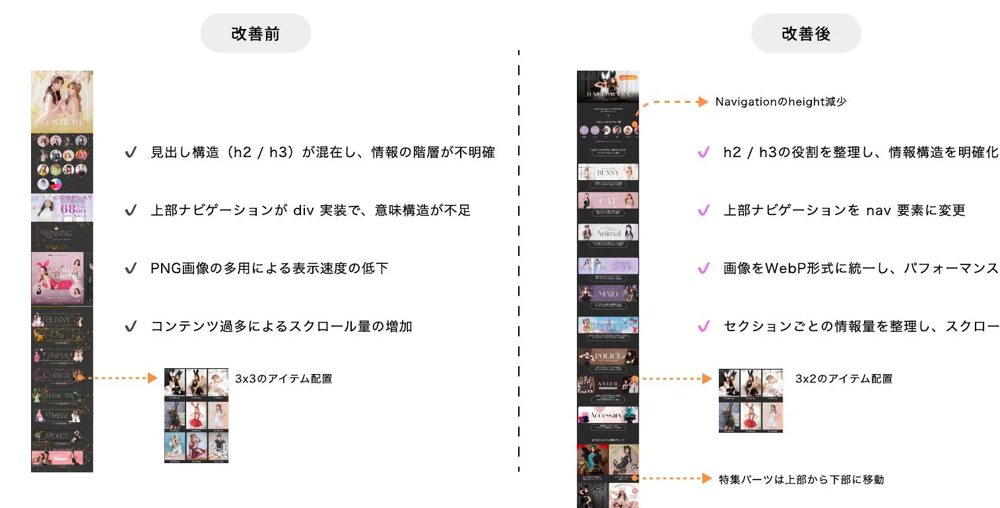
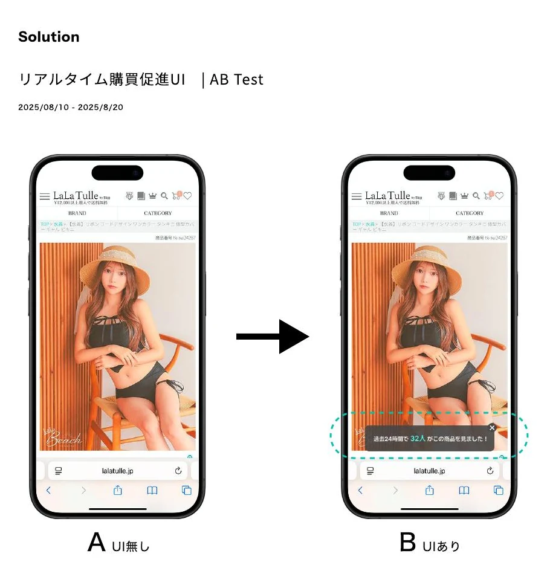

自然検索の伸び悩み
シーズン需要が高まる前に、検索結果から特集ページへ届く状態を整える必要があった。
Company UX Improvement
Halloween Page、Landing Page、PDPの3つを、検索流入から商品探索、購入判断までの一連の体験として改善しました。
01 / Halloween Page
主要キーワードの検索順位は6〜8位で停滞。長いページと弱い内部リンクにより、検索から到達してもカテゴリ閲覧後に迷いやすい状態でした。
シーズン需要が高まる前に、検索結果から特集ページへ届く状態を整える必要があった。
見出しとカテゴリの関係が弱く、目的のドレスへ進むには長いスクロールが必要だった。
ユーザーと検索エンジンの両方が、特集とカテゴリの関係を追いにくい構造だった。
Halloween / SEO & Structure
見出し、ナビゲーション、画像形式、コンテンツ量を整理し、ページの意味構造と閲覧のしやすさを同時に改善しました。

h2/h3の役割を整理し、上部ナビゲーションをnav要素へ変更。画像をWebPに統一し、3×3の商品配置を3×2へ調整してスクロール量を抑えました。
Information Path
上位ページと各カテゴリの往復導線を整理し、FAQにはFAQPageの構造化データを適用。ユーザーと検索エンジンの双方が情報関係を理解できる形にしました。
情報階層をh2/h3で明確化。
カテゴリと特集の往復導線を設計。
質問と回答を構造化データで補強。
WebP化と情報量調整で表示を改善。
SEO Outcome
2025年9月24日〜10月31日を前年同期間と比較。自然検索経由の指標を確認しました。
03 / PDP
商品が直近24時間で一定回数以上閲覧された場合だけ、リアルタイム閲覧人数を表示するUIをABテストしました。表示は10秒後に自動でフェードアウトします。

PDP / Result & Trade-off
カート追加率と購入率には小さな改善が見られた一方、購入開始率は悪化。効果が初期段階に限られ、運用コストに見合わないと判断してテストを中断しました。
PDPからカートへの小さな変化だけで、購入体験全体の成功とは判断しない。
カート追加だけでなく、購入開始と完了まで連続して評価する。
限定的な効果とFirebase運用コストを比較し、継続しない判断をした。
流入を増やすことと、購入を増やすことは同じではない。検索から購入までを一つの行動データとして見る必要がある。
Reflection / LaLaTulle